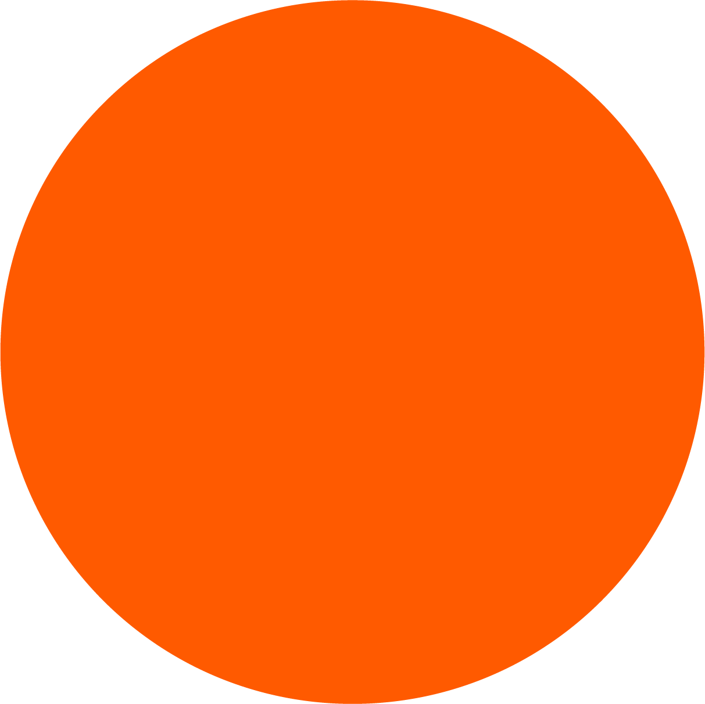
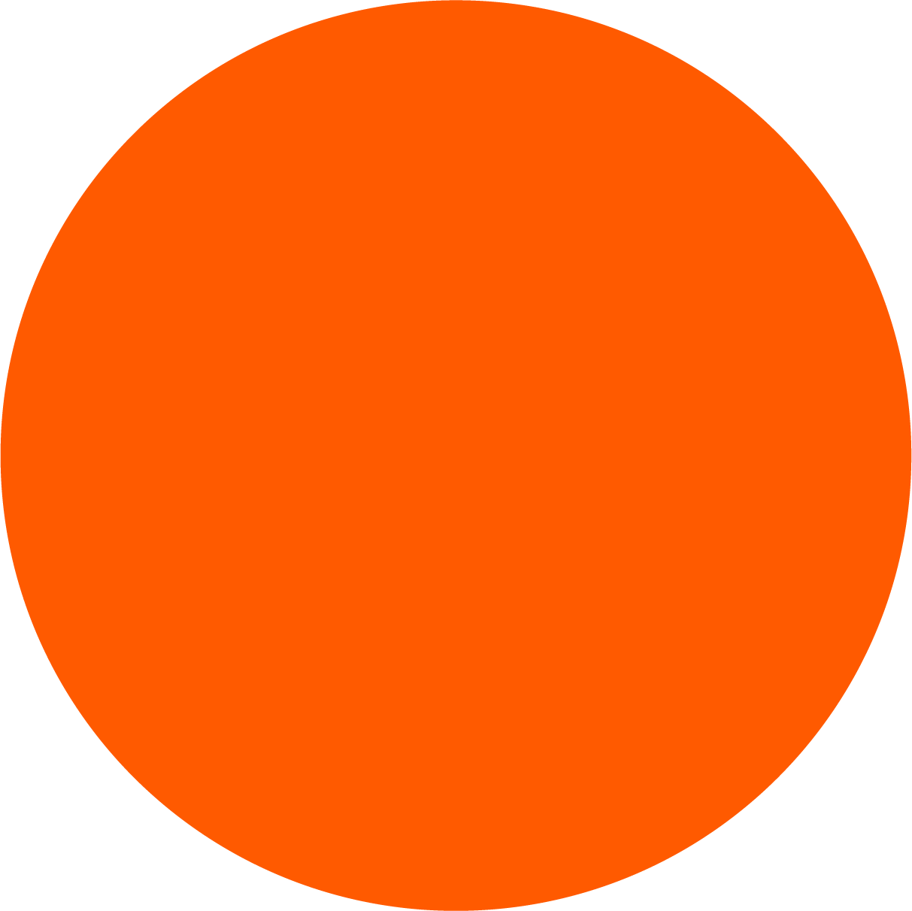
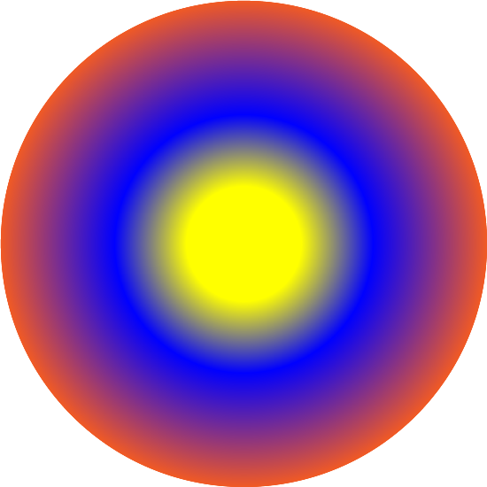
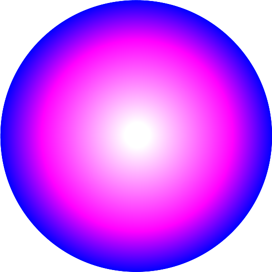
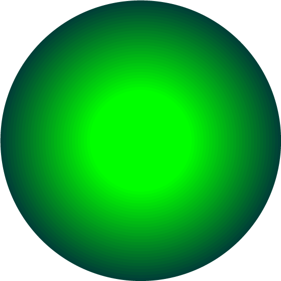

ARCHIVES OF NEBULA
A digital journal of the galaxy Nebula left behind by a mysterious astronaut
08/02/2208 Notes :
To whoever this may concern; welcome to my journal. In the year of 2199, the Earth came in
contact with a black hole. Everyone got separated. I’ve been transported to another galaxy that I name
Nebula. I have not found anyone else. I’m creating this digital journal in hopes of leaving a final
footprint in this world and documenting my adventures.
The archive is a visual representation of the Nebula galaxy contained within the realm of
technology. Stars and other space matter are scattered around the journal.
In order to maintain
the state of the archive, the website needs constant locomotive movements which is why the cosmic matters
are animated infinitely. Hover over some
of them to activate it.
I’ve deciphered the several glitches and mysteries of our
reality. One of them is the capacity to make a website vessel that allows the Internet to travel through
time. I’ve had many trials and
errors. This archive is the final product of that project.
 
THE NEBULA GALAXY
The Nebula Galaxy is composed of millions of stars similar to the Milky Way. After
years
of searching for life, I finally found 3 habitable planets. I spent years figuring out the language
barriers, different lifestyles and what not. I was constantly looking for the whereabouts of my people...
The framework of the archive allows me to document each
planet. Go explore and take your time; get to know them.

THE NEBULA GALAXY
The Nebula Galaxy is composed of millions of stars similar to the Milky Way. After
years
of searching for life, I finally found 3 habitable planets. I spent years figuring out the language
barriers, different lifestyles and what not. I was constantly looking for the whereabouts of my people...
The framework of the archive allows me to document each
planet. Go explore and take your time; get to know them.
When you’re done exploring, follow the stars below the planets and it will lead you to a portal.


